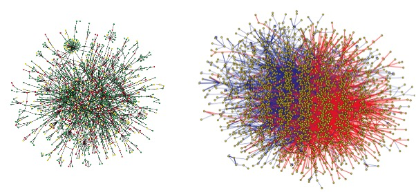
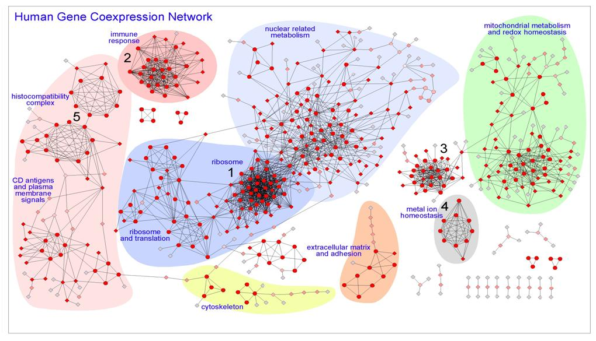
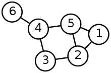
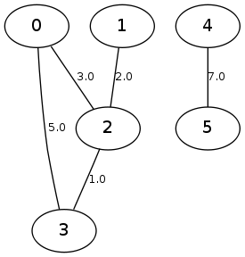
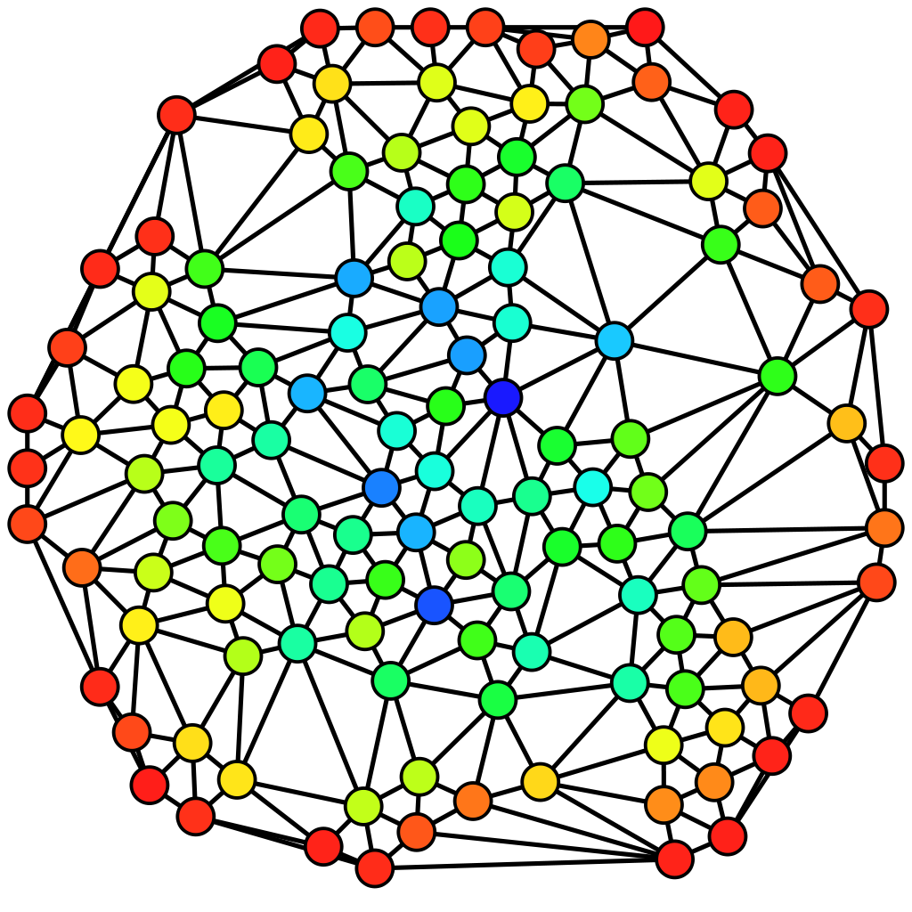

title: “03
Redes Biológicas” author: “Nicholas Barroso” format: revealjs: slide-number: c/t width: 1600 height: 900 logo: img/logo.png footer: “Nicholas Barroso” incremental: false theme: tema_azul.scss lightbox: true
O que são redes?
Redes
- Redes são estruturas ou entidades que conotam a relação entre:
- Objetos
- Indivíduos
- Entidades.
- Os indivíduos são representados por nós/vértices.
- As relações são representadas por arestas.
Redes: alguns tipos
Redes sociais
Redes de computadores
Redes neurais
Redes biológicas
Redes de telecomunicações

O que são redes biológicas?
Algum exemplo?
Rede de predação: Carnaúba por inseto

São redes em que os elementos são dados biológicos . São abstrações computacionais/matemáticas baseadas em dados experimentais.
Redes Biológicas
Formalmente
Redes biológicas
E quais são os dados biológicos?
São dados sobre animais, plantas, microorganismos, genes, proteínas, regulações…
… que tenham alguma relação entre si.
Redes biológicas (cont.)
Dependendo do tipo de dado e das relações podemos ter diferentes tipos de redes biológicas.

Jeong et al. Nature 2001. 411 ( link ) and Rual et al. Nature 2005: 437 ( link ).
Redes Metabólicas

É o conjunto completo de processos metabólicos:
Podemos ter como nós os substratos e produtos;
E as arestas como as reações metabólicas convertendo um composto em outro.
Zhang, Cheng & Hua, Qiang. (2015). Applications of Genome-Scale Metabolic Models in Biotechnology and Systems Medicine. Frontiers in Physiology. 6. 10.3389/fphys.2015.00413.
Redes de co-expressão
- Relação entre transcritos que são expressos ou reprimidos concomitantemente:
- Genes co-expressos podem
- Ser regulados pelo mesmo fator de transcrição;
- Estarem funcionalmente relacionados;
- Serem membros da mesma via;
- Codificar proteínas do mesmo complexo proteico.

Human gene co-expression landscape: confident network derived from tissue transcriptomic profiles
Carlos PRIETO, Alberto RISUENO, Celia FONTANILLO and Javier DE LAS RIVAS
Redes de interação proteína-proteína
As proteínas interagem entre si para desempenhar suas funções celulares
Proteínas interagem formando complexos ou participando de vias comuns.
Interação entre proteínas podem significar a formação de um complexo proteico ou proteínas que funcionam no mesmo processo celular .

Propriedades globais de redes complexas
Distância - Relembrando
A distância entre dois vértices em um grafo é o número de arestas em um caminho mais curto ( shortest path ) conectando-os.

Shortest Path - O caminho mais curto - Relembrando
Dos caminhos possíveis de serem caminhados entre um vértice e outro, o menor caminho é aquele com o menor número de vértices ou arestas atravessados da origem ao destino.

Diâmetro
- É a maior distância entre qualquer par de vértices.
- Para encontrar o diâmetro de um grafo, primeiro encontre o caminho mais curto entre cada par de vértices. O maior comprimento de qualquer desses caminhos é o diâmetro do grafo.

Weight factor - Peso
Pesos são atributos ou valores que podem ser atribuídos as arestas de um grafo.
Quando o grafo possui arestas com pesos, o grafo é chamado de grafo valorado ou ponderado .
Alguém consegue dar um exemplo de possíveis valores que podem ser atribuídos a arestas em redes biológicas?

Weight factor - Peso (cont.)
Pesos são atributos ou valores que podem ser atribuídos as arestas de um grafo.
Quando o grafo possui arestas com pesos, o grafo é chamado de grafo valorado ou ponderado .
Fluxo
Massa
Probabilidade

Centralidades
Indicadores de centralidade identificam os vértices mais importantes dentro de um grafo.
As mais importantes para nós são:
Centralidade de Grau ( Degree centrality )
Centralidade de Proximidade ( Closeness centrality )
Centralidade de Intermediação ( Betweenness centrality )
Centralidade de Autovetor ( Eigenvector )
Centralidade de Alavancagem ( Leverage Centrality )
Centralidade de Difusão ( Diffusion Centrality / Katz Centrality )
Centralidade de Intermediação de Fluxo ( Flow Betweenness Centrality )
Centralidade de grau
É definida como o número de arestas adjacentes a um vértice, ou seja, o número de arestas que um vértice possui.
Centralidade de grau (cont.)
Grau (Degree) : Número absoluto de conexões.
Centralidade de Grau Normalizada : O grau absoluto dividido pelo número máximo de conexões possíveis (que é n-1, onde n é o número total de nós na rede). Isso permite comparar nós de redes de tamanhos diferentes, resultando em um valor entre 0 e 1.
Centralidade de grau (cont.)
- É definida como o número de arestas adjacentes a um vértice, ou seja, o número de arestas que um vértice possui.
- Rede direcionada, onde as relações têm direção, definimos:
- Centralidade de grau de entrada
- Centralidade de grau de saída.
Centralidade de grau (cont.)
Interpretação: Um nó com alta centralidade de grau é um “conector” ou um “hub” da rede. Ele tem interação direta com muitos outros elementos. Na biologia, isso frequentemente indica um elemento funcionalmente crucial – se ele for perturbado, o impacto na rede (e, por consequência, no sistema biológico) tende a ser grande.
Centralidades de proximidade - Closeness centrality
A Centralidade de Proximidade é uma medida de centralidade em teoria de redes que quantifica quão próximo um nó está de todos os outros nós na rede.
Diferente da centralidade de grau (que conta conexões diretas), a de proximidade leva em conta a distância geodésica (o caminho mais curto) para alcançar todos os outros nós.
Centralidades de proximidade - Closeness centrality (cont.)
Um nó com alta centralidade de proximidade pode alcançar todos os outros nós da rede com poucos passos (intermediários).
Ele está no centro da rede no sentido de eficiência de comunicação ou disseminação de informação.
Centralidades de proximidade - Closeness centrality (cont.)
Centralidades de proximidade - Closeness centrality (cont.)
Exemplo
A alta centralidade de proximidade do α-KG indica que ele é um ponto de confluência estratégico ou um “grande terminal de ônibus” do metabolismo celular. Muitos caminhos (rotas metabólicas) passam por ele.
Modificar a disponibilidade deste metabólito (por exemplo, superexpressando a enzima que o produz ou knockdown de uma enzima que o consome para outras vias) pode ter um impacto amplo e eficiente em redirecionar o fluxo de carbono de várias fontes diferentes em direção à via sintética de interesse.
Centralidades de proximidade - Closeness centrality (cont.)
- Nó 1:
- 1→2: 1
- 1 → 3: 2
- 1→4: 2
- 1→5: 2
- 1→6: 3
- 1→7: 1
- Média: 1,83
Centralidades de intermediação

A centralidade de intermediação quantifica o número de vezes que um vértice age como uma ponte ao longo do caminho mais curto entre dois outros nós.
TRADUZINDO : A medida de centralidade de intermediação diz quantas vezes um vértice i faz parte dos menores caminhos entre os outros vértices do grafo.
Centralidades de intermediação (cont.)

Um nó com alta centralidade de intermediação tem um poder de controle desproporcional sobre o fluxo de informação, recursos ou influência na rede.
Se esse nó for removido, a rede pode se fragmentar, e a comunicação entre diferentes grupos se tornará muito menos eficiente ou até impossível.
Centralidades de intermediação (cont.)
- TRADUZINDO : A medida de centralidade de intermediação diz quantas vezes um vértice x faz parte dos menores caminhos entre os outros vértices do grafo.
- Calculando para o vértice 2 :
- 1 → 3: 2; 1 → 4: 1; 1 → 5: 0
- 3 → 1: 2; 3 → 4: 2; 3 → 5: 3
- 4 → 1: 2; 4 → 3: 2; 4 → 5: 0
- 5 → 1: 0; 5 → 4:0; 5 → 3: 4
- Somando: 18
- Calculando para o vértice 2 :
Centralidades de intermediação (cont.)
Centralidade Autovetor (Eigenvector)
Definição: A Centralidade de Autovetor mede a influência de um nó na rede, levando em conta não apenas o número de suas conexões (grau), mas também a importância dos nós aos quais ele está conectado. Um nó é importante se estiver conectado a muitos outros nós importantes.
Aplicação : É perfeita para identificar genes mestres ou proteínas-chave em redes de regulação. Por exemplo, um fator de transcrição que regula outros fatores de transcrição importantes terá uma centralidade de autovetor muito alta, indicando seu papel central na hierarquia de controle da rede.
Exemplo : Identificar os pontos de controle mestres em uma rede de regulação gênica de uma planta para aumentar a produção de um metabólito secundário de interesse (ex.: um corante natural). Manipular um nó com alta centralidade de autovetor pode causar um efeito cascata desejado em toda a rede regulatória.
Centralidade Alavancagem (Leverage Centrality)
Definição : Essa medida compara a conexão de um nó com a de seus vizinhos. Especificamente, ela calcula a diferença entre o grau de um nó e o grau médio de todos os seus vizinhos, normalizada pela soma dos graus. Nós com alta alavancagem são aqueles que estão conectados a nós que têm, em média, muito menos conexões do que eles mesmos.
Aplicação : Excelente para identificar nós periféricos críticos ou “conectores de periferia”. São frequentemente genes ou proteínas especializadas que atuam como uma interface crucial entre um módulo altamente conectado (um complexo proteico, por exemplo) e o resto da rede.
Exemplo : Em uma rede de interação proteína-proteína de um patógeno, um nó com alta alavancagem pode ser uma proteína de membrana que é essencial para a virulência, mas que não é um hub central. Ela poderia ser um ótimo alvo para uma vacina ou anticorpo monoclonal, pois sua inibição pode isolar um módulo funcional crítico sem perturbar drasticamente todo o sistema.
Centralidade de Difusão (Diffusion Centrality / Katz Centrality)
Definição : Uma generalização da centralidade de autovetor que leva em conta não apenas as conexões diretas e de vizinhos imediatos, mas todos os caminhos na rede, atribuindo um peso maior aos caminhos mais curtos. A Centralidade de Katz soma o número de caminhos de todos os comprimentos que emanam de um nó, penalizando caminhos mais longos.
Aplicação : Útil para modelar processos de sinalização ou difusão de metabólitos, onde a informação ou molécula pode percorrer múltiplos caminhos de diferentes comprimentos. Captura a noção de influência de longo alcance.
Exemplo : Modelar como um sinal hormonal (ex.: auxina em plantas) se espalha por uma rede de tecidos para iniciar um processo de crescimento. Identificar os nós com maior centralidade de difusão pode ajudar a prever quais células ou genes responderão mais fortemente ao sinal, permitindo o desenho de estratégias para modular esse processo.
Centralidade de Intermediação de Fluxo (Flow Betweenness Centrality)
Definição : Uma variação da betweenness clássica. Em vez de contar apenas os caminhos mais curtos, ela considera todos os caminos possíveis entre os nós, assumindo que o fluxo na rede (de informação, metabólitos) se dá como em uma rede de encanamentos, não apenas pelos caminhos mais curtos. Ela mede a fração do fluxo total que passa por um nó.
Aplicação : Extremamente poderosa para analisar redes metabólicas. O fluxo de carbono através de uma rede metabólica raramente segue apenas um caminho único e mais curto; ele se distribui por múltiplas rotas.
Exemplo : Ao tentar redirecionar o fluxo metabólico em uma bactéria para maximizar a produção de um bioplástico (ex.: PHA), calcular a centralidade de intermediação de fluxo pode identificar quais enzimas são gargalos reais que controlam a maior parte do fluxo de carbono em direção ao produto desejado, mesmo que não estejam no caminho mais curto. Essas enzimas são os alvos prioritários para a engenharia metabólica.
Centralidade: Resumo
| Centralidade | Melhor para… | Exemplo de Aplicação Biotecnológica |
|---|---|---|
| Grau | Identificar hubs conectados. | Alvo antibiótico (inibir uma proteína essencial muito conectada). |
| Proximidade | Identificar nós de comunicação rápida. | Otimização de vias metabólicas sintéticas. |
| Intermediação | Identificar gargalos e pontes. | Descobrir alvos terapêuticos que desconectam vias de doença. |
| Autovetor | Identificar influência hierárquica. | Engenharia de redes de regulação gênica. |
| Alavancagem | Identificadores especializados críticos. | Desenvolvimento de vacinas (proteínas de membrana de patógenos). |
| Difusão (Katz) | Modelar sinalização de longo alcance. | Prever resposta a hormônios ou fármacos. |
| Intermediação de Fluxo | Analisar redes de fluxo (metabolismo). | Superar gargalos em produção de bioproductos. |
Características de Redes Biológicas
Seis graus de separação
Seis graus de separação: a ideia de que todas as pessoas têm seis ou menos conexões sociais separando-as uma das outras.
Se fizermos uma cadeia de “ amigo de um amigo” poderíamos conectar duas pessoas em um máximo de seis passos.
Foi originalmente estabelecido por Frigyes Karinthy em 1929.
Seis graus de separação - redes
A ideia dos seis graus de separação pode ser aplicada para várias redes biológicas .
Em uma rede biológica, a comunicação ou a separação entre um vértice e outro é, em média, muito baixo.
Mundo Pequeno - Redes
Uma rede de mundo pequeno é um tipo de grafo no qual a maioria dos vértices não são vizinhos uns dos outros, MAS os vizinhos de qualquer vértices são vizinhos entre si e a maioria dos vértices pode ser alcançada por todos os outros vértices por um pequeno número de passos.
Implica que…
todos os vértices de uma rede biológica são facilmente alcançados por outros vértices, assim qualquer perturbação ou sinal em um ponto da rede é rapidamente percebido pelo restante da rede.
Rede livre de escala

São redes complexas cujo grau de distribuição segue uma lei de potência, em que a maioria dos vértices tem poucas ligações, contrastando com a existência de alguns vértices que apresentam um elevado número de ligações.
Nelas a probabilidade de um vértice se ligar a outro vértice novo é diretamente proporcional ao seu grau.
Nestas redes a probabilidade de um nó ter k ligações decai quando k aumenta, segundo a lei de potência.

Rede livre de escala (cont.)
Os vértices com alto grau são raros e chamados de hubs.
Estas redes são por norma mais resistentes a falhas acidentais mas mais vulneráveis a ataques direcionados .
Alguém sabe dizer porque?

Coeficiente de Agrupamento
O coeficiente de agrupamento, clustering coefficient , mede o quanto os vértices de um grafo tendem a agrupar-se.
A maioria das redes reais tendem a criar grupos coesos caracterizados por uma alta densidade de laços.
Transitividade : Se x se relaciona com y e y se relaciona com z , é provável que x e z também se relacionem.
O agrupamento é uma propriedade muito comum nas redes sociais; círculos de amigos.
Se os dados são biológicos, o que isso pode significar?
Robustez e adaptabilidade de sistemas biológicos
Robustez
É a capacidade de manter uma função ou característica independente das perturbações do meio.
Adaptabilidade
Capacidade de fazer mudanças no sistema em resposta a perturbações do meio.
Motivos de redes
Motivos em redes são definidos como padrões ou sub-grafos recorrentes e estatisticamente significativos dentro de uma rede.
Cada um desses sub-grafos, definidos por um padrão particular de interações entre os vértices, pode refletir uma estrutura na qual determinadas funções são alcançadas com eficiência .

Motifs are subgraphs of complex networks that occur significantly more frequently in the given network than expected by chance alone [29]. Consequently, the basic steps of motif analyses are (i) estimating the frequencies of each subgraph in the observed network, (ii) grouping them into subgraph classes consisting of isomorphic subgraphs (topologically equivalent motifs) and (iii) determining which subgraph classes are displayed at much higher frequencies than in their random counterparts (under a specified random graph model).
Motivos de redes (cont.)
Sua importância reside em serem blocos de construção evolutivamente conservados que compõem redes maiores, conferindo-lhes funções específicas e robustez. A identificação de motivos ajuda a prever o comportamento do sistema a partir de sua estrutura de conectividade local.

Motifs are subgraphs of complex networks that occur significantly more frequently in the given network than expected by chance alone [29]. Consequently, the basic steps of motif analyses are (i) estimating the frequencies of each subgraph in the observed network, (ii) grouping them into subgraph classes consisting of isomorphic subgraphs (topologically equivalent motifs) and (iii) determining which subgraph classes are displayed at much higher frequencies than in their random counterparts (under a specified random graph model).
Motivos de redes (cont.)
Motifs are subgraphs of complex networks that occur significantly more frequently in the given network than expected by chance alone [29]. Consequently, the basic steps of motif analyses are (i) estimating the frequencies of each subgraph in the observed network, (ii) grouping them into subgraph classes consisting of isomorphic subgraphs (topologically equivalent motifs) and (iii) determining which subgraph classes are displayed at much higher frequencies than in their random counterparts (under a specified random graph model).
- Feedback Loop (Laço de Retroalimentação)
- Estrutura: Um nó regula outro, que eventualmente regula o primeiro, formando um ciclo. Pode ser positivo (→) ou negativo (⊣).
- Função:
- Positivo: Cria estados estáveis irreversíveis (ex.: diferenciação celular).
- Negativo: Gera oscilações ou mantém homeostase.
- Exemplo Biológico: O ciclo de divisão celular é controlado por um oscilador baseado em um loop de feedback negativo envolvendo as ciclinas e quinases dependentes de ciclina (CDKs).
Motivos de redes (cont.)
Motifs are subgraphs of complex networks that occur significantly more frequently in the given network than expected by chance alone [29]. Consequently, the basic steps of motif analyses are (i) estimating the frequencies of each subgraph in the observed network, (ii) grouping them into subgraph classes consisting of isomorphic subgraphs (topologically equivalent motifs) and (iii) determining which subgraph classes are displayed at much higher frequencies than in their random counterparts (under a specified random graph model).
Motivos de redes (cont.)
Motifs are subgraphs of complex networks that occur significantly more frequently in the given network than expected by chance alone [29]. Consequently, the basic steps of motif analyses are (i) estimating the frequencies of each subgraph in the observed network, (ii) grouping them into subgraph classes consisting of isomorphic subgraphs (topologically equivalent motifs) and (iii) determining which subgraph classes are displayed at much higher frequencies than in their random counterparts (under a specified random graph model).
Single Input Module ( SIM - Módulo de Entrada Única )
Estrutura: Um único nó regulador controla múltiplos nós alvo, sem que haja regulação entre os alvos.
Função: Coordena a expressão sincronizada de um grupo de genes que atuam em uma mesma via biológica.
Exemplo: Um operon em bactérias, onde um único fator de transcrição controla vários genes envolvidos em uma única via metabólica (ex.: operon lac).
Motivos de redes (cont.)
Motifs are subgraphs of complex networks that occur significantly more frequently in the given network than expected by chance alone [29]. Consequently, the basic steps of motif analyses are (i) estimating the frequencies of each subgraph in the observed network, (ii) grouping them into subgraph classes consisting of isomorphic subgraphs (topologically equivalent motifs) and (iii) determining which subgraph classes are displayed at much higher frequencies than in their random counterparts (under a specified random graph model).